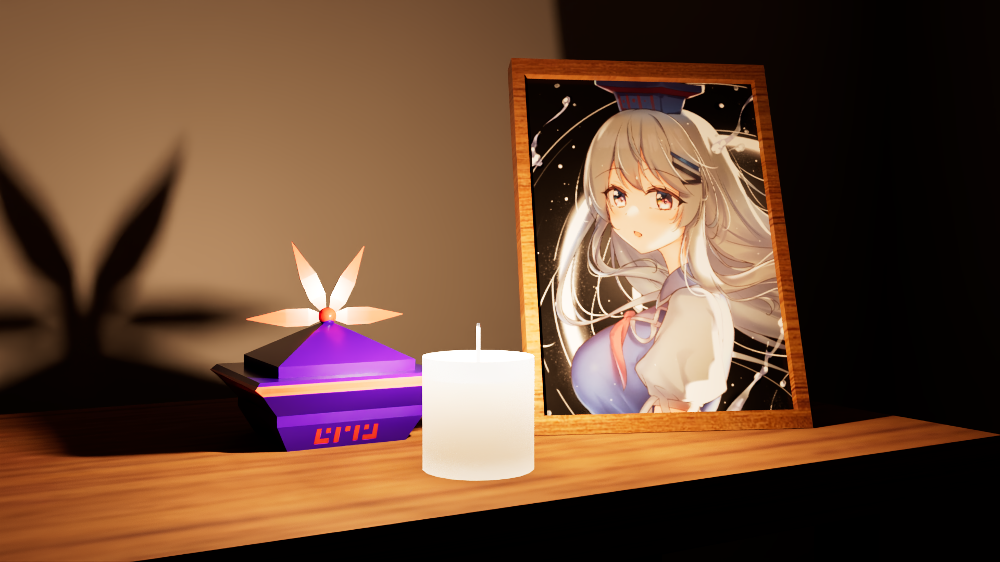
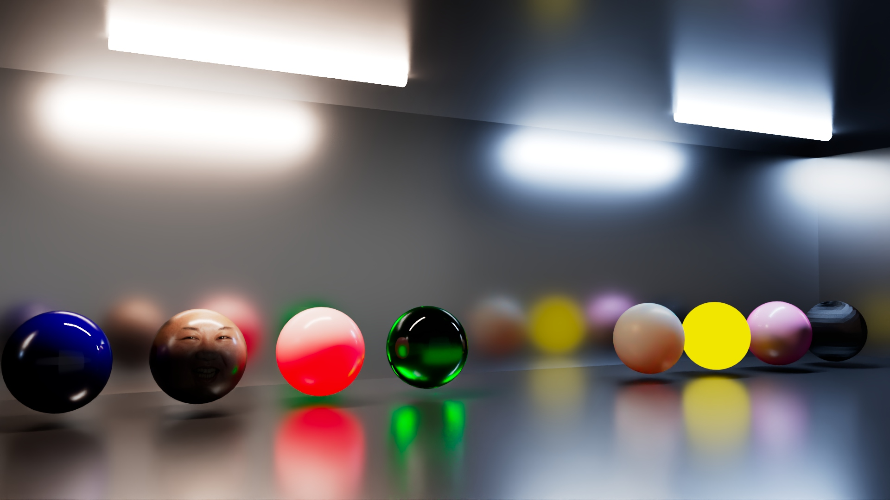

Hello! I'm Rand Raphael L. Palo! Nice to meet you!
Hello! I am Rand Raphael L. Palo and I am a trained 3D artist. High experience in 3D modelling, rigging, and animating. Has used both Autodesk Maya and Blender to create 3D assets and animating them in both softwares.
Projects
Presented below are all the 3D artwork projects I have created so far. Enjoy!

Raiden Mk-ii
The Raiden Mk-ii a.k.a. Raiden II is a fictional ship from the series of arcade games called "Raiden" by Seibu Kaihatsu, now owned by MOSS. This is my favorite fictional aircraft of all time as I love arcade shooters. This is what I also think is my greatest 3D creations of all time.

Keine's Departure
This is a 3D scene project I made. Keine Kamishirasawa is a character in Touhou that I love a lot. I have also created a fan fiction of her with my own self-insert character where they are married, and one of them have passed due to old age. This is also a reflection on how our loved ones will not stay in this world forever and we will all eventually die. So as much as possible, cherish the people who care and love you. Because they will not stay with us forever.

aiStandardSurface Test
This is a project where I am learning the basics of Arnold Rendering for Autodesk Maya. It's just 8 small balls that uses different textures and rendering presets, as well as a way for me to learn creating a good looking scene.